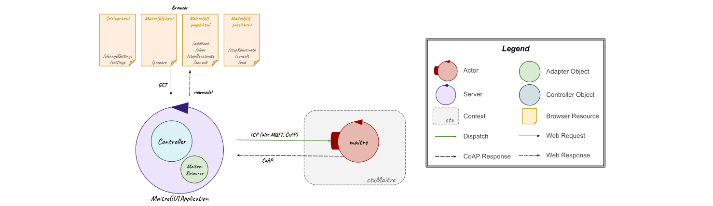

Introduction
The starting point for this SPRINT is the resulting model from the previous Sprint 2:| Machine Understandable Architecture Model | A Possible Graphic Representation |
|---|---|
|
Sprint 2 model.qak |
 
|
Goal
- GUI for
maître's smartphone software
Problem Analysis
GUI for Maître's Smartphone Software
By requirements, the user (To do that, as already said in the initial problem analysis, the software running on the
Therefore, to to solve this sprint goal, the main problems which must be addressed are:
- how to change the mock
maitre actor in a non-mock actor to receive commands in order to allow the user to interact with it through the GUI; - which architecture could be used to represent the system;
- how to realize the GUI as a web application;
- how the GUI (web application) and the
maitre actor must communicate.
Maitre
To redesigned the- its behavior could be assimilated by the GUI; but this is not the most adaptive solution because it fixes the
maitre actor behavior with the GUI preventing the interaction with a different interface mechanism free by this behavior and representing an obstacle for possible future extensions; - the
maitre actor could be a non-mock actor, which maintains its behavior with the other system actors, but it can also receive external commands (in this case from the GUI) as long as the interface mechanism supports the same type of messages exchange.
System Architecture
This application could be developed using the MVC (Model-View-Controller) pattern and making sure the system architecture respects the hexagonal architecture, which allows the communications between the front-end and the back-end by inserting an adapter object: in this way, the web application (front-end) can communicate with theFor example, the user (
GUI - Web Application
This web application could be realized using Spring framework which provides a good support to web application development and to the MVC pattern for the system architecture proposed above.Communications
As already said above, the adapter object allow the communications between the two parts (front-end and back-end); this can be done in different ways through different protocols (TCP, MQTT, CoAP).After a careful evaluation, this could be realized using:
- the TCP, MQTT or CoAP protocol for the communication to the
maitre actor; - the CoAP protocol for the communication from the
maitre actor, so to make possible for everyone to observe its state.
Test Plans
With reference to the initial problem analysis test plans, below it's reported a functional tests planning related to the goal of this sprint:- Tests of all the communications between entities;
- Tests of the mutual exclusion of
tasks and of their order of execution; - Tests of the stop and reactivate commands that can be used by
Maître de salle only when there is a runningtask .
Project
With regard to the problem analysis about this sprint, in this design phase it has been necessary to redesign theMaitre
To not be anymore a mock actor, as said in the problem analysis about this goal, the- prepare(
Crockery ,Food ), whereCrockery andFood are empty string or a list respectively of crockery and food (in case the user (Maître de Salle ) defines through the GUI the elements for thetask Prepare the room , as proposed in the initial problem analysis): in the first case, as in the previous sprints, themaitre loads the default elements from the prolog file (Prepare.pl). Then it sends a preparedispatch to therbr specifing the (default or new) food and crockery; - addFood(
FOOD_CODE ), whereFOOD_CODE is thefood-code defined by the user (Maître de Salle ) for thetask Add Food , as required in requirements text and as proposed in the initial problem analysis: after receiving this command, themaitre sends an addFoodrequest to therbr specifing theFOOD_CODE ; - clear: as in the previous sprints, the
maitre sends a consultdispatch to thetable to know the items (crockery and food) to remove and then it sends a cleardispatch to therbr specifing those elements; - consult: as in the previous sprints, the
maitre sends a consultdispatch to all the resources actors and waits for their answers; - stop: as in the previous sprints, the
maitre sends a stoprequest to therbrwalker and, only when the latterreply with stopped(true ), then themaitre waits for a reactivatedispatch . Here, it has been added the possibility to wait also a consult, but after the execution of this command, it's checked if it was in stop state and then themaitre waits again for a reactivate or consultdispatch ; - reactivate: as in the previous sprints, it sends a reactivate
dispatch to therbrwalker ; - end: it terminates itself.
| Machine Understandable Models | A Possible Graphic Representation |
|---|---|
|
|

|
| Moore State Machine Diagrams | |
 |
FoodConsumer
In this sprint theIn future, it could be improved making it not anymore a mock actor and redesigning it to better manage the food consumption.
MaitreGUI
To realize the GUI, as a web application, for theIn particular, it has been realized, starting from Spring Boot, a Gradle project using Spring Web, Spring Boot DevTools and Thymeleaf dependencies. (Useful the guides for Spring Boot and for Thymeleaf).
Spring Web: builds the web, including RESTful, applications using Spring MVC. Uses Apache Tomcat as the default embedded container.
Spring Boot DevTools: Provides fast application restarts, LiveReload, and configurations for enhanced development experience. Speeds up this refresh cycle (coding a change, restarting application, and refreshing the browser to view the change).
Thymeleaf: modern server-side Java template engine for both web and standalone environments. Allows HTML to be correctly displayed in browsers and as static prototypes
Spring framework: provides a good support to web application development and to the MVC pattern for the system architecture proposed in the problem analysis of this goal/sprint
Thymeleaf: modern server-side Java template engine for both web and standalone environments, capable to inject its logic into template files, like HTML, in a way that doesn’t affect the template from being used as a design prototype.
With regard of what said in the problem analysis of this sprint, this project is composed by: a package src/main/kotlin/it/unibo/maitreGUI with a controller (Controller.kt), an adapter object (MaitreResource.kt), a support for CoAP connection (CoapSupport.kt) and a main (MaitreGuiApplication.kt); a package src/main/kotlin/it/unibo/connQak with ...
With regard of what said in the problem analysis of this sprint, in this project there are two packages in src/main/kotlin/it/unibo (maitreGUI and connQak) and in src/main/resources/templates there are the HTML files for which it has been used thimeleaf and GET methods to send informations.
In particular, in the maitreGUI package there are:
- an adapter object (MaitreResource.kt), (which constructor (is) MaitreResource(name: String, addrdest: String, portdest: String, ctxdest: String, actordest: String, protocol: ConnectionType) (requires the ...) and) which offers methods to send messages (dispatch) to the maitre actor and to receive answers via CoAP;
- a controller (Controller.kt), which reads informations from the view (HTML files/pages) and uses the adapter object MaitreResource to communicate with the maitre actor. Here, it's also added the possibily to change the value to call the adapter object (like the address, the port and the context of the destination actor and the type of protocol (TCP, COAP, MQTT (implemented here but not maitre side/in the application software), HTTP(not yet implemented)) to communicate with it);
- a support for CoAP connection (CoapSupport.kt), used by the MaitreResource to can read the answers received by the maitre actor via CoAP;
- a main (MaitreGuiApplication.kt) to run the application.
- sysConnKb.kt, used to take and set the ... to use for the communications between MaitreResource and destination actor (maitre) (TCP, COAP, MQTT or HTTP (not implemented) to send messages and COAP to receive/read maitre state update);
- connQakBase.kt, which works as a factory class for classes to sends messages to the actors using the TCP, HTTP, CoAP and MQTT protocols;
- some classes (one for each type of connection) used by connQakBase.
APPUNTI: The software it's realized as a web app using the Spring framework.
The package it.unibo.connQak implements functions to send message to the actors with different protocols(in TCP, MQTT, CoAP, HTTP); the connQakBase works as a factory class for classes to sends messages to the actors using the TCP, HTTP, CoAP, MQTT protocols.
The maitreResource sends the commands to the maitre actor by TCP and receives the answers observing by CoAP the actor; in an hexagonal architecture this class is the use case.
The controller works as a Spring controller and intercepts the Get request to execute the right behaviuor using maitreResource and showing the right HTML page.
Immagine view => controller => maitreResource (use cases)
APPUNTI:
To can receive dispatch messages from the controller through the adapter, the maitre actor doesn't must be anymore a mock client and so it must be redesigned.
MaitreResource as adapter object Controller as controller Maitre.html, Maitre_page2 ... as interface using thimeleaf
MaitreGui
The software it's realized as a web app using the Spring framework.The package it.unibo.connQak implements functions to send message to the actors with different protocols(in TCP, MQTT, CoAP, HTTP); the connQakBase works as a factory class for classes to sends messages to the actors using the TCP, HTTP, CoAP, MQTT protocols.
The maitreResource sends the commands to the maitre actor by TCP and receives the answers observing by CoAP the actor; in an hexagonal architecture this class is the use case.
The controller works as a Spring controller and intercepts the Get request to execute the right behaviuor using maitreResource and showing the right HTML page.
Immagine view => controller => maitreResource (use cases)
| Machine Understandable Models | A Possible Graphic Representation |
|---|---|
|
Controller.kt MaitreResource.kt |
 |
| Moore State Machine Diagrams/htlm pages images?? | |
 
|
Testing
The tests for this sprint ... non sono stati fatti in quanto il maitre/il funzionamento del sistema era già stato testato negli sprint precedenti; mentre per quanto riguarda la parte di GUI, questa può essere testata provando a inviare comandi al maitre tramite la web application.Model of System's Logical Architecture
| Machine Understandable Architecture Model | A Possible Graphic Representation |
|---|---|
|
Sprint 3 model.qak |
 
|
Deployment
SCRUM Context
SPRINT Sequence
After this Sprint and according to the Product Backlog, listed after the problem analysis, a possibile set of next Sprint could be:- SPRINT 4
- Deploy on Raspberry
Prepare the room task : execution by the real robotAdd Food task : execution by the real robotClear the room task : execution by the real robot- Tests